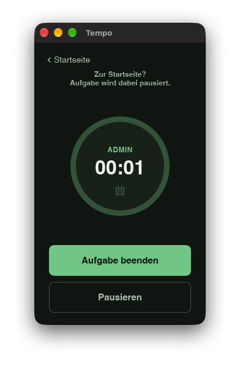
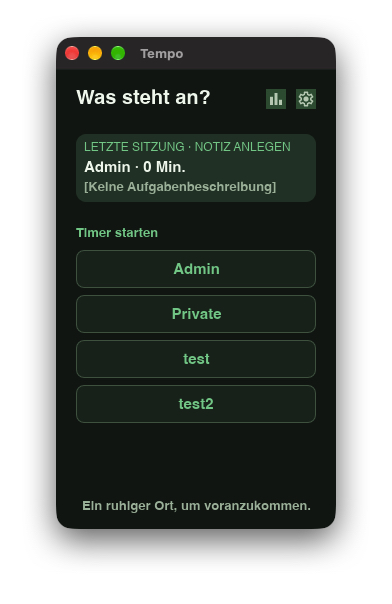
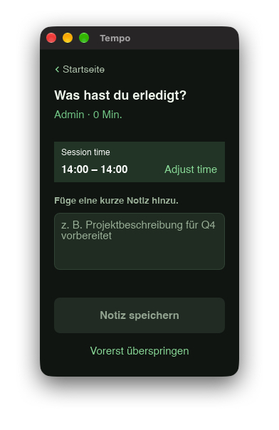
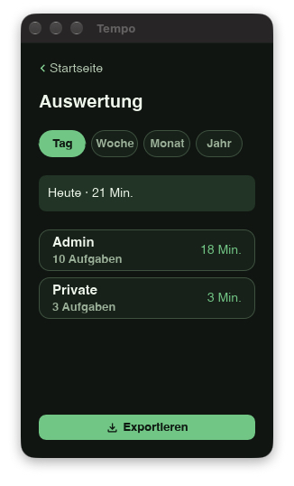
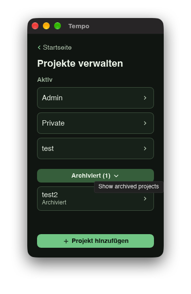
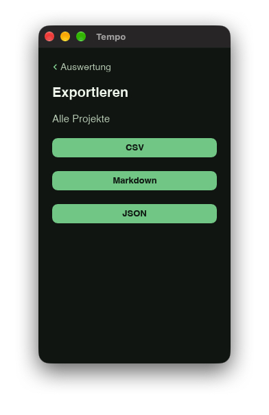

Projekte, die übersichtlich bleiben
Lege Projekte an, benenne sie um oder archiviere sie. Archivierte Projekte verschwinden von der Startseite, ihre Zeit bleibt in der Auswertung erhalten.
Fokuszeit, lokal auf deinem Rechner
Ein ruhiger Desktop-Begleiter für konzentrierte Arbeit. Erstelle ein Projekt, starte eine Session, halte kurz fest, was du erledigt hast, und behalte deine Zeit im Blick – ohne Konto und ohne Cloud.

Klar statt kompliziert
Tempo unterstützt einen bewussten Ablauf für persönliche Arbeit. Es ist kein Tool für Überwachung, Rechnungen, Teams oder Projektplanung.
Lege Projekte an, benenne sie um oder archiviere sie. Archivierte Projekte verschwinden von der Startseite, ihre Zeit bleibt in der Auswertung erhalten.
Starte, pausiere, setze fort oder beende eine Session. Über das Tray kannst du bei Bedarf zu einem anderen Projekt wechseln.
Halte nach der Session eine kurze Aktivitätsnotiz fest. Start- und Endzeit lassen sich vor dem Speichern korrigieren.
Sieh deine Zeit nach Tag, Woche, Monat oder Jahr. Öffne ein Projekt, bearbeite Notizen oder lösche einzelne abgeschlossene Einträge.
Exportiere die aktuelle Auswertung oder ein einzelnes Projekt als CSV, Markdown oder JSON.
Tempo folgt dem hellen oder dunklen Erscheinungsbild deines Systems und erscheint bei deutscher Systemsprache auf Deutsch, sonst auf Englisch.



Deine Auswertung bleibt brauchbar
Tempo bewahrt nicht nur eine Zahl. Die Session ist einem Projekt zugeordnet, bekommt eine kurze Notiz und lässt sich später überprüfen. Exportiere genau die Auswertung, die du brauchst.


Deine Daten gehören dir
Projekte, Sessions und Notizen liegen in einer lokalen SQLite-Datenbank auf deinem Rechner. Tempo braucht kein Login und sendet deine Arbeitsdaten an keinen externen Dienst.
Veröffentlichung in Vorbereitung
Die geplante Desktop-Veröffentlichung umfasst macOS und Windows; eine Linux-Paketierung ist ebenfalls vorgesehen. Die Store-Versionen werden erst angeboten, wenn die jeweiligen Signierungs-, Zertifizierungs- und Datenschutzanforderungen erfüllt sind.
In Vorbereitung. Kein Download vor der App-Store-Freigabe.
In Vorbereitung. Kein Download vor erfolgreicher Zertifizierung.
Eine `.deb`-Paketierung ist vorgesehen; Verfügbarkeit wird separat bekannt gegeben.
Kein Abo. Keine Werbung. Kein kostenloses Freemium-Modell.